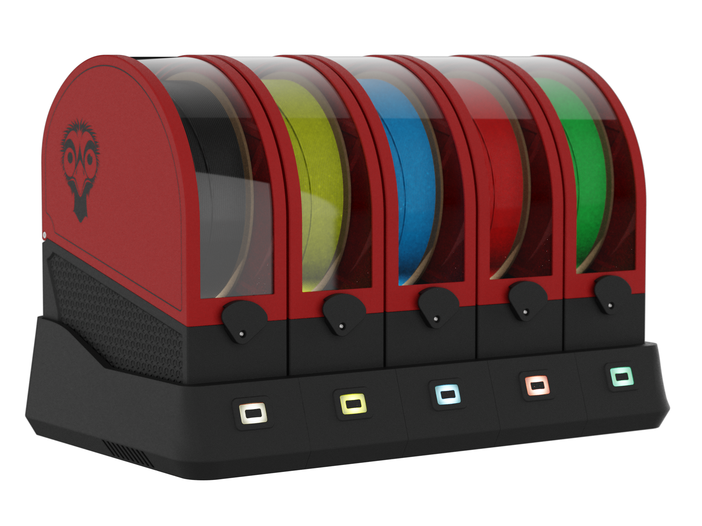

EMU
Expandable Multi-material Unit
A modular, expandable, and service-friendly multi-material unit designed around the proven Filamentalist V3 platform. Features sealed dry boxes, humidity sensors, and per-lane controls.
- Modular & expandable—add lanes anytime
- Tool-free servicing, even mid-print
- Sealed dry boxes with humidity monitoring
- Off-the-shelf EBB42/EBB36 electronics
111 stars
5 forks
View Project